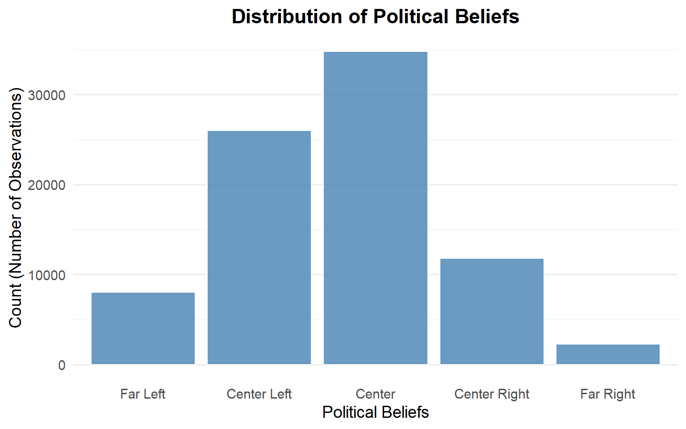
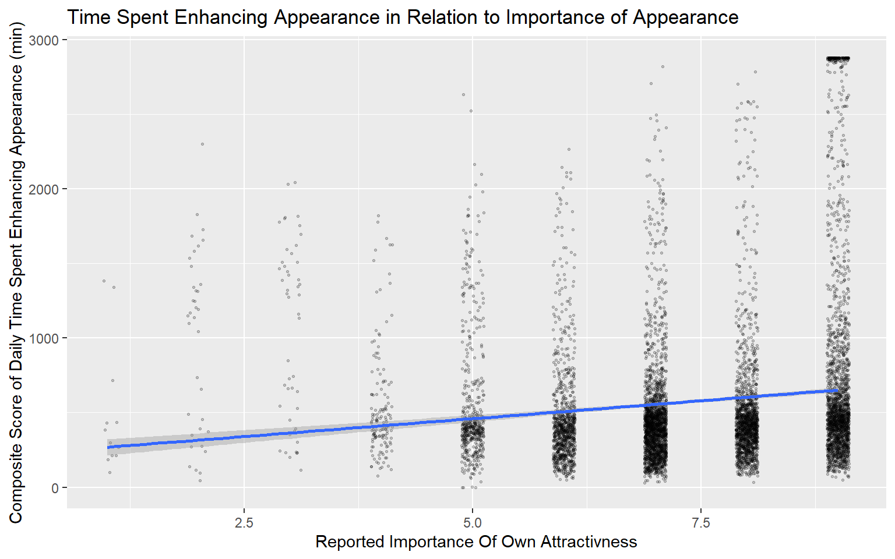

PSY221A Lab 6 - Political Beliefs, Attractiveness and Time Spent Enhancing Appearances
Author
Janek Stahlberg
Code
# small data fix# I realized that my boxplot labelled the x-axis wrong, so I need to changes the levels in my cot_politics variable# For the sake of simplicity, I will just do this here.h1$cot_politics <-factor(h1$cot_politics, levels =c("far_left", "center_left", "center", "center_right", "far_right"))
Hypothesis 1
Self-reported physical attractivness differs depending on individuals political beliefs.
Variables and descriptive statistics
Political beliefs (cot_politics): Categorical variable with three groups: “far_left”, “center_left”, “center”, “center_right”, far_right”.
Physical attractivenes (self_phsysatt): Numerical variable with self reported point rating of individuals physical attractivness on a scale from 1 to 11, where 1 is very low and 11 is very high.
Code
# Count respondents in each group.table(h1$cot_politics)
far_left center_left center center_right far_right
8083 26063 34842 11848 2308
Code
# Summarize attractiveness points seperately in each group.by(h1$self_physatt, h1$cot_politics, summary)
h1$cot_politics: far_left
Min. 1st Qu. Median Mean 3rd Qu. Max.
1.000 6.000 6.000 6.656 8.000 11.000
------------------------------------------------------------
h1$cot_politics: center_left
Min. 1st Qu. Median Mean 3rd Qu. Max.
1.000 6.000 6.000 6.627 8.000 11.000
------------------------------------------------------------
h1$cot_politics: center
Min. 1st Qu. Median Mean 3rd Qu. Max.
1.000 6.000 7.000 6.895 8.000 11.000
------------------------------------------------------------
h1$cot_politics: center_right
Min. 1st Qu. Median Mean 3rd Qu. Max.
1.000 6.000 7.000 6.784 8.000 11.000
------------------------------------------------------------
h1$cot_politics: far_right
Min. 1st Qu. Median Mean 3rd Qu. Max.
1.000 6.000 7.000 7.111 9.000 11.000
#fig-distr shows the distribution of observations of political beliefs.
Code
# 2. Generate the plotggplot(h1, aes(x = cot_politics)) +geom_bar(fill ="steelblue", color ="white", alpha =0.8) +labs(title ="Distribution of Political Beliefs",x ="Political Beliefs",y ="Count (Number of Observations)" ) +theme_minimal(base_size =14) +scale_x_discrete(labels =c("Far Left", "Center Left", "Center", "Center Right", "Far Right")) +# Clean theme with readable font sizetheme(plot.title =element_text(face ="bold", hjust =0.5),panel.grid.major.x =element_blank() # Removes vertical gridlines for cleaner look )

Figure 1: Distribution of Political Beliefs
Graph
Figure 2 shows the distribution shows the distribution of self-reported physical attractivness score by political beliefs. The boxplot shows the median and quartiles with a central box, while the whiskers extend to the minimum and maximum values within a specified range, and individual points plotted beyond them show the outliers.
The ANOVA results indicate a statistically significant difference in self-reported physical attractiveness across political belief groups (F(4, 83139) = 95.58, p < .001). Tukey post-hoc comparisons show most political beliefs group differ significantly from each other and that far-right respondents tend to report higher physical attractiveness than all other groups, while far-left and center-left respondents do not differ significantly. Overall, individuals with right-wing beliefs tend to report higher physical attractiveness.
Hypothesis 2
Importance of looking attractive has a positive effect on daily time spent enhancing appearance .
Variables and descriptive statistics
Importance of Own Attractivness (Attract_importance_1): Numerical variable with self reported importance of own attractivness on a scale from 1 to 9, where 1 is not at all important and 9 is extremely important.
Daily time spent enhancing appearance (app_enh_total): Composite numerical score, sum of 8 variables of time spent on: make up (Time_A_makeup_1), hygiene (Time_A_hyg_1), cosmetics (Time_A_cosm_1), exercise (Time_A_exercise_1), hair (Time_A_hair_1), dressing up (Time_A_dress_1), diet (Time_A_diet_1), other appearance enhancing activities (Time_A_other_1). Score is the sum of minutes spent per day for each activity. Higher value indicate higher overall daily time spent enhancing appearances. Item value 360 represents 6 hours or more.
Code
# don't show ID heresummary(h2[, c("attract_importance_1", "app_enh_total")])
attract_importance_1 app_enh_total
Min. :1.000 Min. : 0.0
1st Qu.:7.000 1st Qu.: 297.0
Median :7.000 Median : 420.0
Mean :7.385 Mean : 574.5
3rd Qu.:9.000 3rd Qu.: 588.0
Max. :9.000 Max. :2880.0
Graph
Figure 3 illustrates the relationship between the time spent enhancing an individual’s appearance and the importance of their own physical appearance. The data are visualized using a scatter plot paired with a linear regression line that summarizes the overall trend. Individual data points are jittered to prevent overlapping and improve readability, though the underlying recorded scores remain unchanged.
Code
#Scatter Plot with lineggplot(data = h2, aes(x = attract_importance_1,y = app_enh_total)) +geom_jitter(width=.12, height=.1, alpha=.2, size = .6) +labs(x ="Reported Importance Of Own Attractivness", y ="Composite Score of Daily Time Spent Enhancing Appearance (min)", title ="Time Spent Enhancing Appearance in Relation to Importance of Appearance") +geom_smooth(method="lm")
`geom_smooth()` using formula = 'y ~ x'

Figure 3: Time Spent Enhancing Appearance in Relation to Importance of Appearance
Observed trend
Code
r <-cor(h2$attract_importance_1, h2$app_enh_total, use ="complete.obs")round(r,2)
[1] 0.13
A correlation coefficient of 0.13 indicates a weak, positive linear relationship between the two variables. Respondents who reported more confidence in finding a new partner tended to report lower commitment. Individuals who place greater importance on their physical appearance tend to spend slightly more time enhancing it, though this tendency is small.